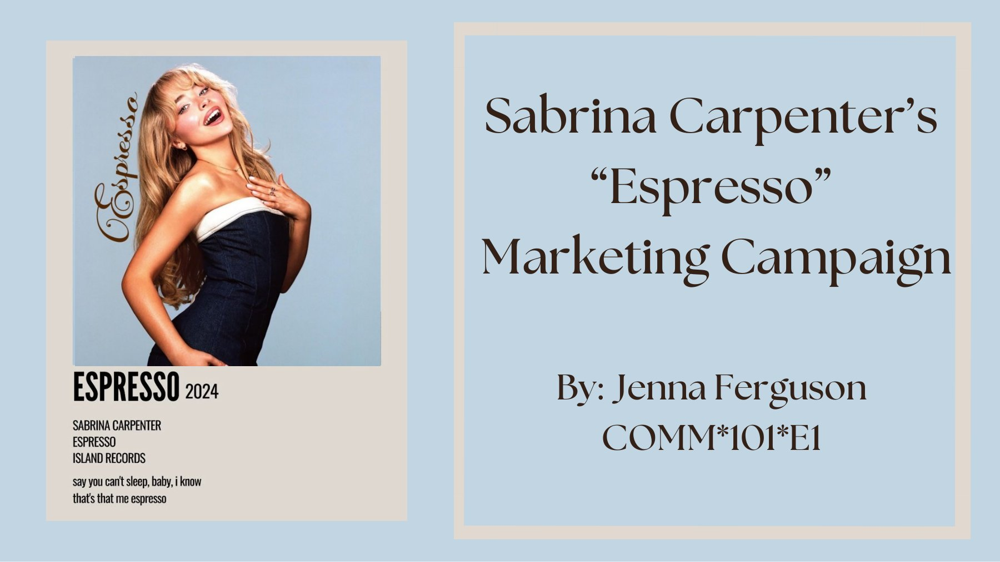

Projects ♡
Real work for local businesses, social media strategy, and campaign analysis, organized by type.
Brand Identity
Logos designed for real local small businesses.
Lucky's Garage
A retro, high-energy logo for a local mobile mechanic business, built to feel bold, memorable, and a little bit lucky.
View Project →KJ Cleaning Services
A friendly, fresh brand look for a home and office cleaning service, using a soft pink and sky-blue palette.
View Project →Menus & Flyers
Print pieces designed in Canva, including a menu customers actually order from.
 In Use
In UsePizzeria 90 Menu
The menu Pizzeria 90 in Longs, SC actually hands to customers, organized so guests can find what they want fast.
View Project → Real Client
Real ClientPizzeria 90 Opening Flyer
A bold "coming this October" flyer announcing Pizzeria 90, the new pizza spot from Bistro 90.
View Project →Social Media Strategy
Platform strategy and content analysis for consumer brands.
 Strategy
StrategyOwala Social Media Strategy
A one-page social strategy to grow Owala's online sales among college students through educational and UGC TikToks.
View Project → Analysis
AnalysisSummer Fridays Instagram Analysis
A side-by-side look at two Summer Fridays Instagram posts: one that blends into the feed and invites clicks, and one that reads like an ad.
View Project →Campaign Analysis
Presentations breaking down why big campaigns work.

PresentationSabrina Carpenter's "Espresso" Campaign
How the "Espresso" campaign used communication strategy to completely rebrand Sabrina Carpenter's public image.
View Project →My Favorite Digital: rhode
Why rhode's Peptide Lip Shape launch worked: strong visual identity, social-first strategy, and celebrity and creator reach.
View Project →Let's create something people remember. ♡
Have a project, internship, or opportunity? I'd love to hear about it.
Get in Touch LinkedIn